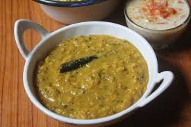

🍛 Cholar Dal

Ingredients
- 1 cup chana dal (Bengal gram)
- 2 cups water
- 1/2 tsp turmeric powder
- Salt to taste
- 1 tbsp sugar
- 2 tbsp grated coconut (optional)
- 1 tsp cumin seeds
- 1/2 tsp fennel seeds (optional)
- 2 bay leaves
- 2–3 dry red chilies
- 1 tbsp ghee or mustard oil
- 1 tsp ginger paste
- 2 green cardamoms
- 2 cloves
- 1 small cinnamon stick
Instructions
- Rinse and soak the chana dal for at least 1 hour, then drain.
- Cook dal in a pressure cooker with turmeric and salt for 2-3 whistles or until soft but not mushy.
- Heat ghee or mustard oil in a pan. Add bay leaves, cumin seeds, fennel seeds, cardamoms, cloves, cinnamon, and dry red chilies.
- Add ginger paste and sauté for a few seconds.
- Add cooked dal and sugar. Mix well and simmer for 5–10 minutes.
- Add grated coconut if using and stir well. Adjust salt and water to desired consistency.
- Serve hot with luchi or rice.
Serve With
- Luchi (deep-fried Bengali bread)
- Steamed rice
- Beguni (batter-fried eggplant)
💡 Tip: For added aroma, drizzle a little ghee on top just before